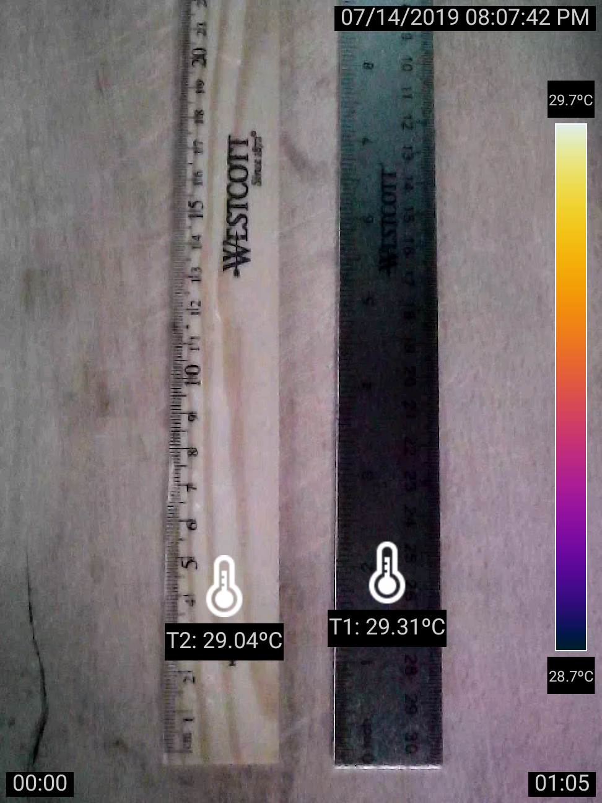
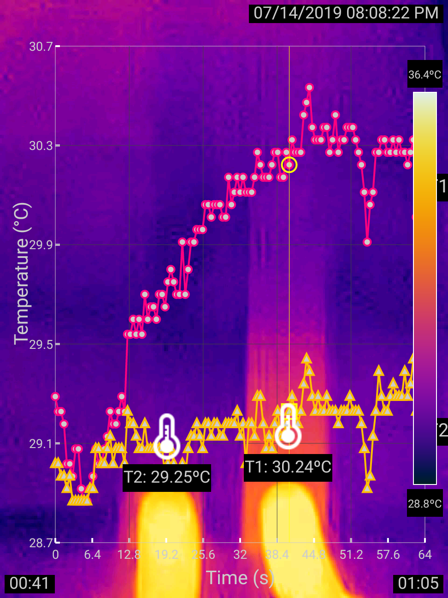
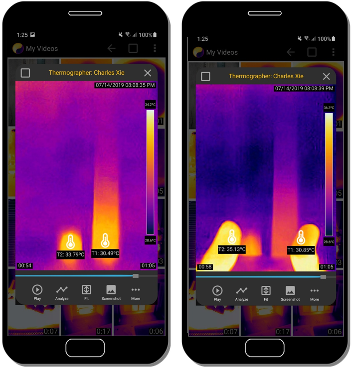
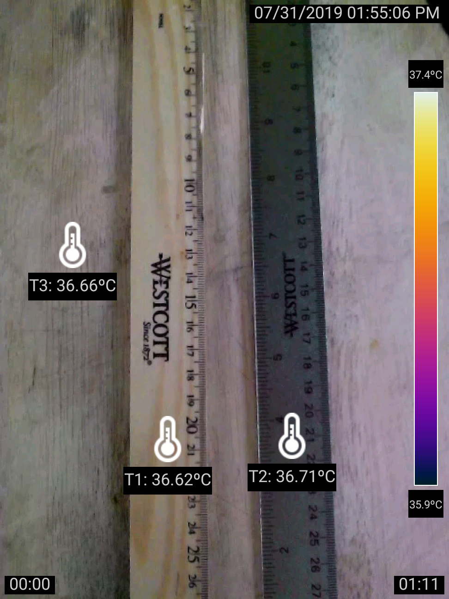
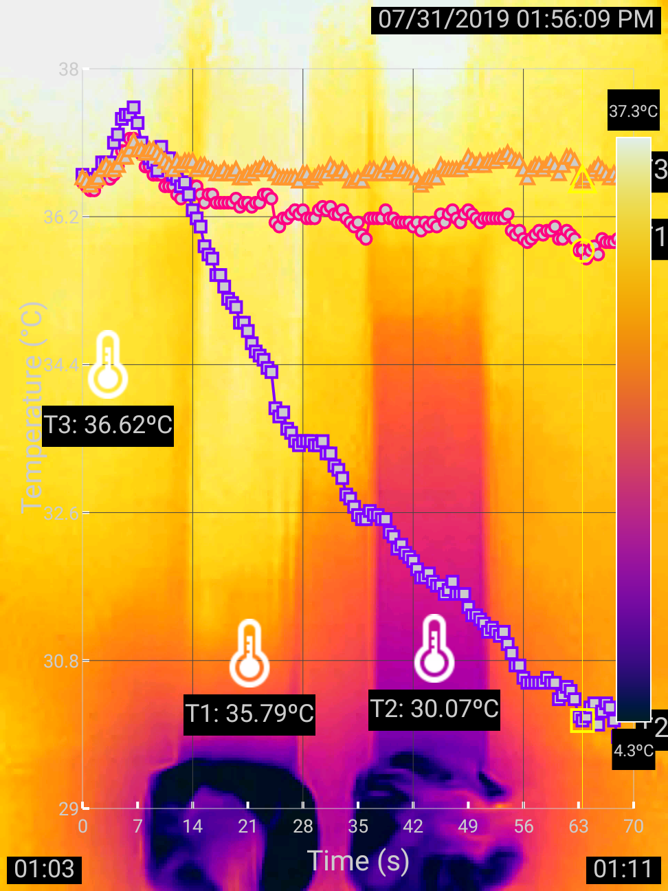

Why do metals feel colder than wood?
Press both thumbs on a metal ruler and a wood ruler, then let a thermal camera reveal what touch gets wrong — turning a classic misconception into a visible lesson in thermal conductivity.
"If pupils were able to 'see' this phenomenon in terms of a transfer of energy from their body to the object, this sort of situation [that they believe metals are inherently colder than wood] would likely be less of a problem than it seems to be at present." — Professor Gaalen Erickson, University of British Columbia, in "Children's Ideas in Science," 1985, p.59
Many science concepts are difficult for students because they cannot be seen in the real world. Just as scientists are "prisoners caught in the framework of existing theories" as philosopher of science Karl Popper famously asserted, students, too, can be imprisoned by their own perception of the world from everyday life. The belief that metals are inherently colder than wood is one such misconception. Dr. Gaalen Erickson, then a professor at the University of British Columbia, conjectured in 1985 that having students "see" the heat transfer from the body to the object might remedy the misconception. What he needed was a thermal camera, which, at that time, was not only difficult to use but also prohibitively expensive for educators.
Two thumbs up
Nearly forty years later, the technology has matured and the price of basic thermal cameras that can be connected to a smartphone (such as FLIR ONE) has plummeted to $200 or below. Professor Erickson's wish has come true. The simple experiment using a metal ruler and a wood ruler shown in this article represents an instructional design that any researcher can use to test his hypothesis. This instruction sequence is more optimally supported by our Infrared Explorer, now available in Google Play to Android users. To learning scientists interested in science education, this experiment provokes a cognitive dissonance between the visual and tactile inputs: Through a thermal camera, students see that the metal ruler actually appears to be warmer than the wood one after the thumbs touch both for a minute (Figure 1), while the sense of touch suggests otherwise. You can view and analyze the recorded experiment yourself by clicking the link below Figure 1.


Figure 1: Using two thumbs as identical heaters to warm up the metal and wood rulers.
By lifting the thumbs and then immediately observing the residual heat in the metal and wood rulers through the lens of a thermal camera, the difference in their thermal conductivities — a key concept to resolve this cognitive dissonance — becomes evident. A visual comparison of the temperatures of the thumbs reveals that the one that touched the metal ruler has lost more energy, which is why it feels colder, as shown in Figure 2. The figure also shows that the touch area of the wood ruler was warmer than that of the metal ruler, which serves as an intermediate "connective tissue" — because heat travels more slowly in wood, it disperses less, thus also reducing the transfer of thermal energy from the thumb to the touch area. As you can see, the full explanation of why metals feel colder than wood involves the interactions between the thumbs and the touch areas, as well as the spread of thermal energy from the touch areas to the rest parts of the rulers through conduction. All these can now be visualized through thermal imaging.

Metals do not necessarily always feel colder than wood
The experiment can be extended by using two ice cubes to draw thermal energy from the rulers, as shown in Figure 3. The result suggests that thermal energy also flows — in the opposite direction — more quickly in metal than in wood. You can view and analyze the recorded experiment by clicking the link below Figure 3. This result suggests that metals do not necessarily always feel colder than wood — in a hot summer day when the air temperature is higher than the body temperature, metals feel hotter than wood even though both are not exposed to the sun (just imagine that the ice tubes in this experiment were your thumbs). The misconception that metals feel colder than wood is common because the air temperature is lower than the body temperature in most time of the year in most places in the world.


Figure 3: Using two ice cubes as identical chillers to cool down the metal and wood rulers.
Concluding remarks
This elegant experiment demonstrates the tremendous visualization power and teaching potential of thermal imaging. In a sense, thermal vision opens a whole new world that has never been seen before to students. As a picture is worth a thousand words, real-time full-field thermal imaging provides a visualization of an ongoing process that can be easily recognized. A thermal camera makes generating such a visualization as simple as taking a photo with a common digital camera. What it can immediately show and tell would have taken students hours to get if they had to use thermometers to collect data and then connect the dots. By liberating students from laborious data collection, thermal imaging can directly focus them on analyzing results. This acceleration can make laboratory learning more productive and increase the chance for students to explore more ramifications. These affordances make thermal imaging an ideal tool for supporting guided inquiry, in which data analysis is typically viewed as more important than data collection in helping students develop thinking skills and conceptual understandings.
← Back to Infrared Explorer